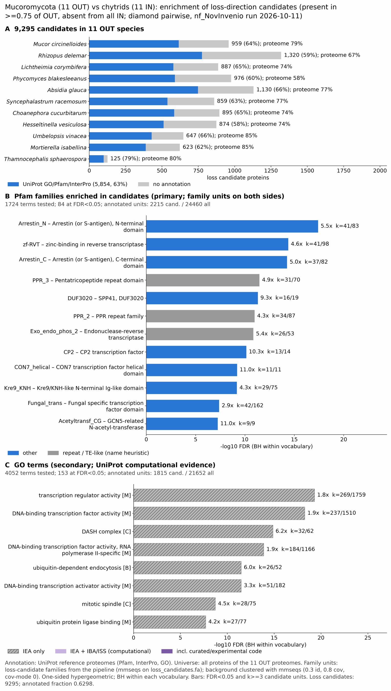

chytrid vs mucoromycota: functional enrichment (loss)
One-sided hypergeometric test per term; Benjamini-Hochberg FDR within each scope, level and vocabulary. Candidates are the loss candidates: gene families present in the OUT group and absent from the IN group. Universe: proteome. Background clustered: True (121980 sequences in 48216 clusters, mmseqs easy-cluster --min-seq-id 0.3 -c 0.8). Family level: one unit per candidate family and per background cluster.
Sources: Pfam: 2026-01-27-Pfam38.2; InterPro entries: 110.0; GO: releases/2026-07-26; analysis generated 2026-10-12T18:27:20. Source tables: studies/fungi/chytrid_vs_mucoromycota/analysis/enrichment/outputs/loss/proteome_clustered.
Full record: PROVENANCE. Run report: report.html.
- Annotation provenance is not fully recorded: PROVENANCE.yaml lists the per-species annotation files and their checksums, but not the UniProt release they come from.
- GO results are secondary. GO annotations include computational evidence (IEA, IBA); the GO evidence column shows if a term has non-IEA support.
- Candidate families (pipeline clustering of candidates) and background clusters (mmseqs clustering of the background proteome) are made by different runs, so family-level counts are not fully comparable.
- Low annotation: the candidate set has less than 50% annotation for GO 41.9%. Enrichment for these vocabularies has low power.
Summary figure

Annotation coverage
Fraction of proteins with at least one term per vocabulary. Universe = all proteins of the species; candidates = the candidate set.
| Species | Set | Proteins | Pfam | Pfam clan | InterPro | GO | Any |
|---|---|---|---|---|---|---|---|
| Mucocirc | universe | 12143 | 74.1% | 61.2% | 78.5% | 67.5% | 78.7% |
| Mucocirc | candidates | 959 | 52.3% | 38.1% | 63.8% | 42.5% | 64.1% |
| Rhizdele | universe | 16971 | 60.9% | 51.5% | 66.8% | 55.9% | 67.1% |
| Rhizdele | candidates | 1320 | 45.0% | 32.7% | 58.1% | 37.8% | 58.7% |
| Lichcory | universe | 12138 | 68.9% | 57.1% | 74.0% | 62.6% | 74.2% |
| Lichcory | candidates | 887 | 53.7% | 40.9% | 65.0% | 43.1% | 65.2% |
| Phycblak | universe | 16154 | 52.4% | 43.3% | 58.3% | 46.7% | 58.5% |
| Phycblak | candidates | 976 | 49.3% | 36.0% | 60.0% | 38.8% | 60.4% |
| Absiglau | universe | 14825 | 71.1% | 59.7% | 77.2% | 66.2% | 77.4% |
| Absiglau | candidates | 1130 | 53.2% | 39.9% | 65.8% | 43.5% | 66.2% |
| Syncrace | universe | 11037 | 72.3% | 59.4% | 76.5% | 66.0% | 76.7% |
| Syncrace | candidates | 859 | 51.6% | 37.7% | 62.5% | 42.7% | 62.6% |
| Choacucu | universe | 11924 | 69.0% | 56.5% | 73.5% | 62.9% | 73.8% |
| Choacucu | candidates | 895 | 51.8% | 37.8% | 64.7% | 43.9% | 65.2% |
| Hessvesi | universe | 11058 | 69.9% | 57.3% | 74.3% | 63.4% | 74.4% |
| Hessvesi | candidates | 874 | 48.3% | 35.2% | 58.2% | 38.0% | 58.5% |
| Umbevina | universe | 9235 | 81.4% | 67.2% | 85.2% | 73.5% | 85.4% |
| Umbevina | candidates | 647 | 53.5% | 39.1% | 66.0% | 45.3% | 66.3% |
| Mortisab | universe | 9021 | 81.7% | 67.5% | 85.1% | 74.3% | 85.5% |
| Mortisab | candidates | 623 | 52.6% | 38.8% | 61.6% | 43.7% | 62.3% |
| Thamspha | universe | 6769 | 74.1% | 59.4% | 79.7% | 68.4% | 80.0% |
| Thamspha | candidates | 125 | 69.6% | 52.0% | 79.2% | 63.2% | 79.2% |
| ALL_OUT | universe | 131275 | 69.0% | 57.0% | 74.0% | 62.9% | 74.2% |
| ALL_OUT | candidates | 9295 | 51.0% | 37.6% | 62.6% | 41.9% | 63.0% |
Tests summary
Per vocabulary: terms with FDR < 0.05 / terms tested. Protein level counts proteins; family level counts candidate families and background clusters.
| Scope | Level | Cand. units | Pfam sig / tested | Pfam clan sig / tested | InterPro sig / tested | GO sig / tested |
|---|---|---|---|---|---|---|
| whole_set | family | 4185 | 84 / 1724 | 19 / 397 | 132 / 3614 | 153 / 4052 |
| whole_set | protein | 9295 | 235 / 4592 | 56 / 496 | 424 / 9715 | 397 / 6140 |
| Absiglau | family | 921 | 10 / 427 | 3 / 237 | 21 / 972 | 12 / 2211 |
| Absiglau | protein | 1130 | 17 / 747 | 9 / 283 | 35 / 1655 | 52 / 2705 |
| Choacucu | family | 829 | 4 / 396 | 1 / 224 | 12 / 907 | 7 / 2419 |
| Choacucu | protein | 895 | 8 / 557 | 4 / 255 | 18 / 1284 | 19 / 2640 |
| Hessvesi | family | 799 | 6 / 332 | 1 / 214 | 10 / 798 | 7 / 2396 |
| Hessvesi | protein | 874 | 7 / 494 | 1 / 244 | 13 / 1138 | 24 / 2619 |
| Lichcory | family | 757 | 7 / 339 | 2 / 218 | 10 / 807 | 31 / 2292 |
| Lichcory | protein | 887 | 17 / 582 | 14 / 262 | 35 / 1311 | 70 / 2596 |
| Mortisab | family | 595 | 3 / 344 | 3 / 232 | 12 / 854 | 8 / 2129 |
| Mortisab | protein | 623 | 7 / 470 | 4 / 251 | 13 / 1129 | 29 / 2317 |
| Mucocirc | family | 834 | 8 / 380 | 4 / 229 | 19 / 896 | 27 / 2167 |
| Mucocirc | protein | 959 | 12 / 619 | 7 / 270 | 26 / 1435 | 46 / 2573 |
| Phycblak | family | 809 | 9 / 312 | 2 / 217 | 16 / 768 | 8 / 2037 |
| Phycblak | protein | 976 | 14 / 517 | 4 / 253 | 21 / 1241 | 24 / 2377 |
| Rhizdele | family | 1094 | 12 / 397 | 3 / 229 | 18 / 928 | 6 / 2304 |
| Rhizdele | protein | 1320 | 16 / 647 | 7 / 270 | 28 / 1498 | 34 / 2611 |
| Syncrace | family | 789 | 5 / 341 | 2 / 215 | 12 / 823 | 7 / 2401 |
| Syncrace | protein | 859 | 8 / 528 | 7 / 251 | 15 / 1224 | 14 / 2692 |
| Thamspha | family | 118 | 1 / 178 | 0 / 173 | 0 / 510 | 0 / 1752 |
| Thamspha | protein | 125 | 1 / 236 | 0 / 189 | 0 / 628 | 0 / 1848 |
| Umbevina | family | 613 | 5 / 348 | 2 / 225 | 11 / 846 | 13 / 2132 |
| Umbevina | protein | 647 | 6 / 491 | 4 / 250 | 12 / 1138 | 28 / 2330 |
Top 25 Pfam terms (whole set, family level)
25 rows shown, ordered by FDR then p-value; 25 have FDR < 0.05 (bold).
| Term | Name | k / N cand. | n / M bg | Fold | FDR (BH) |
|---|---|---|---|---|---|
| PF00339 | Arrestin_N: Arrestin (or S-antigen), N-terminal domain | 41 / 2215 | 83 / 24460 | 5.455 | 3.88e-18 |
| PF13966 | zf-RVT: zinc-binding in reverse transcriptase | 41 / 2215 | 98 / 24460 | 4.62 | 4.12e-15 |
| PF02752 | Arrestin_C: Arrestin (or S-antigen), C-terminal domain | 37 / 2215 | 82 / 24460 | 4.983 | 5.40e-15 |
| PF13812 | PPR_3: Pentatricopeptide repeat domain | 31 / 2215 | 70 / 24460 | 4.89 | 3.44e-12 |
| PF11223 | DUF3020: SPP41, DUF3020 | 16 / 2215 | 19 / 24460 | 9.299 | 4.99e-12 |
| PF13041 | PPR_2: PPR repeat family | 34 / 2215 | 87 / 24460 | 4.316 | 1.07e-11 |
| PF14529 | Exo_endo_phos_2: Endonuclease-reverse transcriptase | 26 / 2215 | 53 / 24460 | 5.417 | 1.40e-11 |
| PF04516 | CP2: CP2 transcription factor | 13 / 2215 | 14 / 24460 | 10.254 | 7.37e-11 |
| PF27979 | CON7_helical: CON7 transcription factor helical domain | 11 / 2215 | 11 / 24460 | 11.043 | 6.29e-10 |
| PF10342 | Kre9_KNH: Kre9/KNH-like N-terminal Ig-like domain | 29 / 2215 | 75 / 24460 | 4.27 | 6.57e-10 |
| PF04082 | Fungal_trans: Fungal specific transcription factor domain | 42 / 2215 | 162 / 24460 | 2.863 | 4.12e-08 |
| PF14542 | Acetyltransf_CG: GCN5-related N-acetyl-transferase | 9 / 2215 | 9 / 24460 | 11.043 | 5.80e-08 |
| PF01535 | PPR: PPR repeat | 25 / 2215 | 69 / 24460 | 4.001 | 7.80e-08 |
| PF27810 | MSB2_C: MSB2 C-terminal domain | 10 / 2215 | 12 / 24460 | 9.202 | 2.49e-07 |
| PF08655 | DASH_Ask1: DASH complex subunit Ask1 | 8 / 2215 | 8 / 24460 | 11.043 | 4.82e-07 |
| PF10250 | O-FucT: GDP-fucose protein O-fucosyltransferase | 8 / 2215 | 8 / 24460 | 11.043 | 4.82e-07 |
| PF00172 | Zn_clus: Fungal Zn(2)-Cys(6) binuclear cluster domain | 46 / 2215 | 209 / 24460 | 2.43 | 1.17e-06 |
| PF08578 | DUF1765: Protein of unknown function (DUF1765) | 7 / 2215 | 7 / 24460 | 11.043 | 4.74e-06 |
| PF08507 | COPI_assoc: COPI associated protein | 9 / 2215 | 12 / 24460 | 8.282 | 6.25e-06 |
| PF13896 | Glyco_transf_49: Glycosyl-transferase for dystroglycan | 10 / 2215 | 16 / 24460 | 6.902 | 1.51e-05 |
| PF12855 | Ecl1: TORC1 inhibitor Ecl family | 13 / 2215 | 28 / 24460 | 5.127 | 2.22e-05 |
| PF03106 | WRKY: WRKY DNA -binding domain | 7 / 2215 | 8 / 24460 | 9.663 | 2.73e-05 |
| PF23207 | PH_SPO71: Prospore membrane adapter protein SPO71 PH domain | 7 / 2215 | 8 / 24460 | 9.663 | 2.73e-05 |
| PF01284 | MARVEL: Membrane-associating domain | 6 / 2215 | 6 / 24460 | 11.043 | 3.94e-05 |
| PF10300 | Iml2-TPR_39: Iml2/Tetratricopeptide repeat protein 39 | 12 / 2215 | 26 / 24460 | 5.097 | 5.87e-05 |
Top 25 InterPro terms (whole set, family level)
25 rows shown, ordered by FDR then p-value; 25 have FDR < 0.05 (bold).
| Term | Name | k / N cand. | n / M bg | Fold | FDR (BH) |
|---|---|---|---|---|---|
| IPR002885 | Repeat:Pentatricopeptide repeat | 56 / 2700 | 136 / 27833 | 4.245 | 1.09e-18 |
| IPR011021 | Domain:Arrestin-like, N-terminal | 41 / 2700 | 83 / 27833 | 5.092 | 5.40e-17 |
| IPR050357 | Family:Arrestin domain-containing protein | 43 / 2700 | 93 / 27833 | 4.766 | 1.13e-16 |
| IPR014752 | Homologous_superfamily:Arrestin-like, C-terminal domain superfamily | 55 / 2700 | 148 / 27833 | 3.831 | 1.94e-16 |
| IPR050815 | Family:Transcription factor, fungi | 44 / 2700 | 105 / 27833 | 4.32 | 2.80e-15 |
| IPR011022 | Domain:Arrestin-like, C-terminal domain | 39 / 2700 | 86 / 27833 | 4.675 | 6.61e-15 |
| IPR026960 | Domain:Reverse transcriptase zinc-binding domain | 41 / 2700 | 98 / 27833 | 4.313 | 2.95e-14 |
| IPR039327 | Family:C2H2 finger domain transcription factor CON7-like | 14 / 2700 | 14 / 27833 | 10.309 | 2.55e-12 |
| IPR040167 | Family:Transcription factor CP2-like | 14 / 2700 | 14 / 27833 | 10.309 | 2.55e-12 |
| IPR050987 | Family:ABC-transporter-regulating transcription factor-like | 39 / 2700 | 104 / 27833 | 3.866 | 9.10e-12 |
| IPR021386 | Domain:SPP41, DUF3020 | 16 / 2700 | 19 / 27833 | 8.681 | 1.41e-11 |
| IPR052982 | Family:Remodeling of fungal cell wall protein 1 | 21 / 2700 | 36 / 27833 | 6.013 | 1.95e-10 |
| IPR007604 | Domain:CP2 transcription factor | 13 / 2700 | 14 / 27833 | 9.572 | 2.33e-10 |
| IPR060579 | Domain:C2H2 finger domain transcription factor CON7, helical domain | 11 / 2700 | 11 / 27833 | 10.309 | 1.81e-09 |
| IPR018466 | Domain:Cell wall synthesis protein KRE9/Knh1-like, N-terminal | 29 / 2700 | 75 / 27833 | 3.986 | 5.07e-09 |
| IPR031165 | Domain:Yjdj-type Gcn5-related N-acetyltransferase | 9 / 2700 | 9 / 27833 | 10.309 | 1.60e-07 |
| IPR039295 | Family:Signaling mucin MSB2 | 9 / 2700 | 9 / 27833 | 10.309 | 1.60e-07 |
| IPR036864 | Homologous_superfamily:Zn(2)-C6 fungal-type DNA-binding domain superfamily | 55 / 2700 | 240 / 27833 | 2.362 | 2.33e-07 |
| IPR001138 | Domain:Zn(2)Cys(6) fungal-type DNA-binding domain | 56 / 2700 | 249 / 27833 | 2.318 | 3.20e-07 |
| IPR014756 | Homologous_superfamily:Immunoglobulin E-set | 42 / 2700 | 161 / 27833 | 2.689 | 3.20e-07 |
| IPR007219 | Domain:Xylanolytic transcriptional activator-like, regulatory domain | 42 / 2700 | 163 / 27833 | 2.656 | 4.56e-07 |
| IPR060624 | Domain:MSB2-like, C-terminal domain | 10 / 2700 | 12 / 27833 | 8.59 | 6.56e-07 |
| IPR013964 | Family:DASH complex subunit Ask1 | 8 / 2700 | 8 / 27833 | 10.309 | 1.17e-06 |
| IPR019378 | Family:GDP-fucose protein O-fucosyltransferase | 8 / 2700 | 8 / 27833 | 10.309 | 1.17e-06 |
| IPR001849 | Domain:Pleckstrin homology domain | 59 / 2700 | 282 / 27833 | 2.157 | 1.63e-06 |
Top 15 GO terms (whole set, family level) — secondary, computational evidence (IEA/IBA) included
15 rows shown, ordered by FDR then p-value; 15 have FDR < 0.05 (bold).
| Term | Name | k / N cand. | n / M bg | Fold | FDR (BH) | GO evidence | Families with non-IEA |
|---|---|---|---|---|---|---|---|
| GO:0140110 | molecular_function:transcription regulator activity | 269 / 1815 | 1759 / 21652 | 1.824 | 4.93e-20 | IEA_only | 0 |
| GO:0003700 | molecular_function:DNA-binding transcription factor activity | 237 / 1815 | 1510 / 21652 | 1.872 | 5.41e-19 | IEA_only | 0 |
| GO:0042729 | cellular_component:DASH complex | 32 / 1815 | 62 / 21652 | 6.157 | 1.37e-15 | IEA_only | 0 |
| GO:0000981 | molecular_function:DNA-binding transcription factor activity, RNA polymerase II-specific | 184 / 1815 | 1166 / 21652 | 1.883 | 1.29e-14 | IEA_only | 0 |
| GO:0070086 | biological_process:ubiquitin-dependent endocytosis | 26 / 1815 | 52 / 21652 | 5.965 | 3.33e-12 | IEA_only | 0 |
| GO:0001216 | molecular_function:DNA-binding transcription activator activity | 51 / 1815 | 182 / 21652 | 3.343 | 3.33e-12 | IEA_only | 0 |
| GO:0001228 | molecular_function:DNA-binding transcription activator activity, RNA polymerase II-specific | 51 / 1815 | 182 / 21652 | 3.343 | 3.33e-12 | IEA_only | 0 |
| GO:0072686 | cellular_component:mitotic spindle | 28 / 1815 | 75 / 21652 | 4.454 | 1.90e-09 | IEA_only | 0 |
| GO:0031625 | molecular_function:ubiquitin protein ligase binding | 27 / 1815 | 77 / 21652 | 4.183 | 2.01e-08 | IEA_only | 0 |
| GO:0044389 | molecular_function:ubiquitin-like protein ligase binding | 27 / 1815 | 77 / 21652 | 4.183 | 2.01e-08 | IEA_only | 0 |
| GO:0009986 | cellular_component:cell surface | 16 / 1815 | 28 / 21652 | 6.817 | 2.36e-08 | IEA_only | 0 |
| GO:0098657 | biological_process:import into cell | 54 / 1815 | 250 / 21652 | 2.577 | 2.54e-08 | IEA_only | 0 |
| GO:0005034 | molecular_function:osmosensor activity | 9 / 1815 | 9 / 21652 | 11.929 | 6.26e-08 | IEA_only | 0 |
| GO:0001402 | biological_process:signal transduction involved in filamentous growth | 9 / 1815 | 11 / 21652 | 9.76 | 2.39e-06 | IEA_only | 0 |
| GO:0007231 | biological_process:osmosensory signaling pathway | 9 / 1815 | 11 / 21652 | 9.76 | 2.39e-06 | IEA_only | 0 |
Actin cytoskeleton controls
Known actin-related families and how many of their proteins pass each filter. Protein ID columns are left out.
| control | pfam_ids | desc_regex | OUT_universe | OUT_in_matrix | OUT_pass_outgroup_rule | candidates | near_miss_in1 | near_miss_in2 | n_Mucocirc | n_Rhizdele | n_Lichcory | n_Phycblak | n_Absiglau | n_Syncrace | n_Choacucu | n_Hessvesi | n_Umbevina | n_Mortisab | n_Thamspha | n_Batrdend | n_Batrsala | n_Spizpunc | n_Powehirt | n_Geravari | n_Syncendo | n_Syncmicr | n_Chytconf | n_Polystew | n_Rhizglob | n_Rhizrose |
|---|---|---|---|---|---|---|---|---|---|---|---|---|---|---|---|---|---|---|---|---|---|---|---|---|---|---|---|---|---|---|
| Arp2/3 ARPC2 (P34-Arc) | PF04045 | 12 | 12 | 12 | 0 | 0 | 0 | 1 | 1 | 1 | 1 | 2 | 1 | 1 | 1 | 1 | 1 | 1 | 1 | 1 | 1 | 1 | 1 | 1 | 1 | 1 | 1 | 1 | 1 | |
| Arp2/3 ARPC3 (P21-Arc) | PF04062 | 10 | 10 | 10 | 0 | 0 | 0 | 1 | 0 | 1 | 1 | 1 | 1 | 1 | 1 | 1 | 1 | 1 | 1 | 1 | 1 | 1 | 1 | 1 | 1 | 1 | 1 | 1 | 1 | |
| Arp2/3 ARPC4 | PF05856 | 11 | 11 | 11 | 0 | 0 | 0 | 1 | 2 | 1 | 1 | 1 | 1 | 1 | 1 | 1 | 1 | 0 | 1 | 1 | 1 | 1 | 1 | 1 | 1 | 1 | 1 | 1 | 1 | |
| Arp2/3 ARPC5 (P16-Arc) | PF04699 | 10 | 10 | 10 | 0 | 0 | 0 | 1 | 1 | 0 | 1 | 1 | 1 | 1 | 1 | 1 | 1 | 1 | 1 | 1 | 1 | 1 | 1 | 1 | 1 | 2 | 1 | 1 | 1 | |
| Arp2/3 ARPC1 (description only) | arp2/3 complex.*(41|p41|subunit 1)|ARPC1 | 0 | 0 | 0 | 0 | 0 | 0 | 0 | 0 | 0 | 0 | 0 | 0 | 0 | 0 | 0 | 0 | 0 | 0 | 1 | 0 | 0 | 0 | 1 | 0 | 0 | 0 | 0 | 0 | |
| Arp2 / Arp3 (description only) | actin-related protein (2|3)\b|\bARP[23]\b | 69 | 69 | 69 | 0 | 0 | 0 | 6 | 7 | 5 | 5 | 8 | 5 | 8 | 7 | 7 | 7 | 4 | 6 | 7 | 6 | 7 | 6 | 7 | 6 | 6 | 8 | 5 | 6 | |
| WAVE complex NCKAP1 | PF09735 | 0 | 0 | 0 | 0 | 0 | 0 | 0 | 0 | 0 | 0 | 0 | 0 | 0 | 0 | 0 | 0 | 0 | 1 | 1 | 1 | 1 | 1 | 1 | 1 | 0 | 1 | 0 | 1 | |
| WAVE complex CYFIP (FragX_IP) | PF05994 | 0 | 0 | 0 | 0 | 0 | 0 | 0 | 0 | 0 | 0 | 0 | 0 | 0 | 0 | 0 | 0 | 0 | 1 | 1 | 1 | 1 | 1 | 1 | 1 | 0 | 1 | 0 | 1 | |
| WAVE complex ABI | PF07815|PF27594 | 0 | 0 | 0 | 0 | 0 | 0 | 0 | 0 | 0 | 0 | 0 | 0 | 0 | 0 | 0 | 0 | 0 | 0 | 0 | 0 | 0 | 0 | 0 | 0 | 0 | 0 | 0 | 0 | |
| SCAR/WAVE (SCAR_helical) | PF27569 | 0 | 0 | 0 | 0 | 0 | 0 | 0 | 0 | 0 | 0 | 0 | 0 | 0 | 0 | 0 | 0 | 0 | 1 | 1 | 1 | 1 | 1 | 1 | 1 | 0 | 1 | 0 | 1 | |
| WASP family (WH1) | PF00568 | 21 | 21 | 21 | 2 | 1 | 2 | 3 | 1 | 1 | 1 | 2 | 3 | 2 | 3 | 2 | 2 | 1 | 1 | 1 | 1 | 1 | 1 | 1 | 1 | 1 | 1 | 1 | 1 | |
| WH2 motif (WASP, WAVE, others) | PF02205 | 20 | 20 | 18 | 0 | 0 | 2 | 2 | 1 | 2 | 0 | 3 | 2 | 2 | 3 | 2 | 3 | 0 | 3 | 1 | 1 | 1 | 1 | 1 | 1 | 1 | 1 | 0 | 1 | |
| Formin FH2 | PF02181 | 65 | 64 | 63 | 1 | 0 | 0 | 8 | 9 | 7 | 3 | 9 | 6 | 6 | 7 | 4 | 4 | 2 | 4 | 6 | 4 | 4 | 4 | 3 | 4 | 5 | 6 | 5 | 5 | |
| Formin Drf_GBD / Drf_FH3 / Drf_DAD | PF06371|PF06367|PF06345 | 81 | 81 | 80 | 17 | 0 | 0 | 8 | 11 | 7 | 6 | 10 | 7 | 8 | 8 | 7 | 7 | 2 | 3 | 4 | 4 | 3 | 4 | 2 | 3 | 3 | 4 | 3 | 7 | |
| Ena/VASP (VASP_tetra) | PF08776 | 0 | 0 | 0 | 0 | 0 | 0 | 0 | 0 | 0 | 0 | 0 | 0 | 0 | 0 | 0 | 0 | 0 | 0 | 0 | 0 | 0 | 0 | 0 | 0 | 0 | 0 | 0 | 0 | |
| Coronin (description only) | coronin | 21 | 21 | 21 | 0 | 0 | 0 | 1 | 3 | 2 | 2 | 3 | 2 | 1 | 2 | 2 | 2 | 1 | 1 | 1 | 3 | 3 | 4 | 1 | 2 | 4 | 2 | 2 | 4 | |
| Cortactin (HS1_rep) | PF02218 | 0 | 0 | 0 | 0 | 0 | 0 | 0 | 0 | 0 | 0 | 0 | 0 | 0 | 0 | 0 | 0 | 0 | 0 | 0 | 0 | 0 | 0 | 0 | 0 | 0 | 0 | 0 | 0 | |
| Myosin 2 tail (Myosin_tail_1) | PF01576 | 2 | 2 | 1 | 0 | 0 | 0 | 0 | 0 | 0 | 0 | 0 | 0 | 0 | 0 | 0 | 1 | 1 | 1 | 1 | 1 | 1 | 1 | 1 | 1 | 1 | 1 | 1 | 2 | |
| Myosin head (all myosins) | PF00063 | 146 | 146 | 146 | 0 | 0 | 0 | 17 | 19 | 14 | 16 | 18 | 11 | 16 | 13 | 8 | 9 | 5 | 7 | 8 | 9 | 9 | 7 | 6 | 9 | 13 | 7 | 14 | 12 |
Page written by bin/generate_enrichment_page.py.